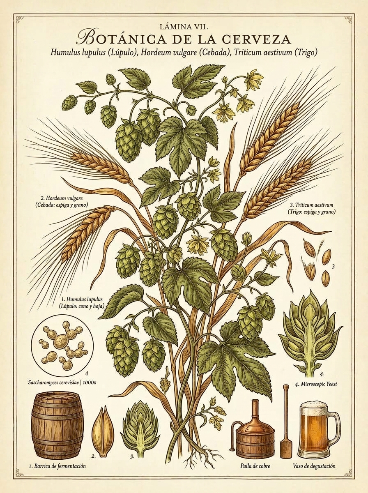

Guía interactiva sobre familias de fermentación, bioquímica de cereales y arte del servicio
Guía Botánica, Microbiológica & Sensorial

🔬 3 Familias (Lager, Ale, Espontánea)
🌾 Cereales (Malteados vs. Crudos)
Microbiología & Temperatura
La clasificación cardinal de la cerveza no depende del color ni del amargor, sino de la especie de levadura y la dinámica térmica de fermentación.
❄️ Familia Lager 7 °C – 13 °C
Saccharomyces pastorianus (fondo del tanque)
Las levaduras trabajan lentamente a bajas temperaturas y decantan al fondo. Requiere una maduración prolongada en frío (lagering durante semanas o meses) que redondea el perfil.
Perfil Sensorial: Sumamente limpio, seco, nítido y refrescante. Cero o mínimos ésteres frutales; protagonismo absoluto del cereal malteado y los lúpulos nobles.
Estilos Emblemáticos:
🍷 Servicio ideal: Vaso Pilsner / Flauta (favorece la efervescencia y retención de espuma blanca).
🌾 Familia Ale 15 °C – 24 °C
Saccharomyces cerevisiae (superficie del tanque)
Las levaduras suben a la superficie formando una densa corona de espuma durante su enérgica fermentación. Proceso más rápido y a temperatura ambiente moderada.
Perfil Sensorial: Expresivo y frutal. Las levaduras sintetizan ésteres (aromas a plátano, manzana, pera) y fenoles (clavo de olor, pimienta), combinados con generosas adiciones de malta y lúpulo.
Estilos Emblemáticos:
🍷 Servicio ideal: Pinta Nonic, Vaso Weizen o Copa Tulipa.
🍇 Espontánea & Mixta Ambiente / Barrica
Brettanomyces, Lactobacillus, Pediococcus y microflora
El mosto se expone al aire nocturno en piscinas abiertas (koelschip) en el valle del río Senne (Bélgica) o se inocula con cultivos mixtos. Madura durante meses o años en toneles de roble.
Perfil Sensorial: Complejo, ácido, seco y agreste. Marcada acidez láctica/acética, notas terrosas, cuero mojado, establo (barnyard funk) y madera añeja.
Estilos Emblemáticos:
🍷 Servicio ideal: Copa Tulipa o Cáliz Belga (oxigena y resalta la acidez noble).
Botánica Agraria & Enzimología
El grano es el corazón azucarado y proteico de la cerveza. Entender la diferencia entre la germinación enzimática (malteado) y el uso de grano crudo es la clave para comprender la textura y cuerpo de cada estilo.
El Proceso: Remojo en agua \(\rightarrow\) Germinación controlada \(\rightarrow\) Secado/Tostado en horno.
El Proceso: Grano cosechado directamente o pre-gelatinizado en copos sin pasar por maltería.
“El maltero crea el azúcar que alimenta la vida microbiana; el grano crudo esculpe la sedosidad y el manto de espuma que acaricia el paladar.”
Geometría & Termodinámica
Cada estilo cervecero exige una geometría específica para regular la temperatura de servicio, canalizar los compuestos volátiles aromáticos hacia la nariz y preservar la corona de espuma.
Estilos: Pilsner, Helles, Kolsch, Pale Lager
Propósito: Su silueta cónica alta y esbelta resalta la claridad brillante dorada y concentra el flujo continuo de burbujas de \(\text{CO}_2\), manteniendo una espuma densa y blanca.
Estilos: Pale Ale, IPA, Amber Ale, Stout, Porter
Propósito: El ensanchamiento superior mejora el agarre, evita que los bordes se despostillen y permite beber cómodamente cervezas de trago largo con moderada carbonatación.
Estilos: Hefeweizen, Dunkelweizen, Witbier, Gose
Propósito: Base estrecha y boca acampanada con gran volumen (500 ml) para albergar la exuberante corona de espuma de trigo y liberar los aromas a plátano y clavo.
Estilos: Belgian Tripel, Saison, Lambic, Gueuze, Imperial Stout
Propósito: Su cuerpo abombado concentra los ésteres complejos y el labio evertido dirige el líquido hacia la parte frontal y lateral de la lengua, realzando la frescura y los aromas nobles.
Terminología Cervecera & Sensorial
Conceptos bioquímicos fundamentales, ingredientes clave, procesos de estabilización y descriptores sensoriales no tan comunes para enriquecer la experiencia de degustación.
🔍
Cereal germinado y tostado • Malt
Granos de cereal (principalmente cebada o trigo) sometidos a germinación controlada y secado/tostado en horno.
🌾 Ingrediente
🔬 Usos y Efectos en la Cerveza
Aporta las enzimas amilasas (\(\alpha\) y \(\beta\)) que transforman el almidón en azúcares fermentables consumidos por la levadura, y dextrinas que construyen el cuerpo de la bebida.
👅 Impacto en Sabor y Color
Determina el color (escala SRM desde pajizo brillante hasta negro opaco). Según su nivel de tostado, confiere sabores que van desde pan fresco, galleta y cereal dulce, hasta caramelo, toffee, frutos secos, chocolate amargo y café torrefacto.
Infusión azucarada no fermentada • Wort
Líquido denso y dulce obtenido tras macerar los granos molidos en agua caliente (64–68 °C) y separar el bagazo sólido en la cuba de filtrado.
🌾 Mosto Base
🔬 Usos y Efectos en la Cerveza
Es el medio de cultivo nutritivo que alimentará a la levadura. Durante su posterior ebullición en la olla, se añade el lúpulo, se esteriliza la mezcla y se precipitan proteínas indeseables.
👅 Impacto en Sabor y Graduación
Su concentración de azúcares disueltos (Gravedad Original u OG) define el grado alcohólico potencial (ABV) y la densidad de azúcares residuales no fermentables que darán plenitud al paladar.
Humulus lupulus • Conos y Glándulas de Lupulina
Flores o conos femeninos de la planta trepadora cannabácea Humulus lupulus, cuyas glándulas doradas (lupulina) aportan alfa-ácidos y aceites esenciales.
🌿 Lúpulo
🔬 Usos y Efectos en la Cerveza
👅 Impacto en Sabor y Sensación
Equilibra el dulzor de la malta mediante un amargor refrescante medido en IBUs. Despliega un abanico aromático: cítricos (pomelo, mandarina), resinosos (pino), florales, herbales o frutas tropicales (maracuyá, mango).
Graduación alcohólica en volumen • Alcohol by Volume
Porcentaje en volumen (% vol) que mide la concentración de etanol puro contenido en 100 ml de cerveza a 20 °C.
⚙️ Parámetro
🔬 Cálculo & Dinámica Bioquímica
Resulta de la fermentación donde las levaduras consumen azúcares del mosto generando alcohol y \(\text{CO}_2\). Se determina mediante el diferencial de densidades:
\[\text{ABV} \approx (\text{OG} - \text{FG}) \times 131.25\]
👅 Impacto en Sensación, Cuerpo y Sabor
Tratamiento térmico de conservación • Pasteurization
Proceso térmico controlado (flash a ~72 °C durante 15–30 segundos o en túnel a ~60–65 °C sobre envases) para inactivar levaduras y bacterias.
⚙️ Estabilidad
🔬 Usos y Efectos en la Cerveza
Garantiza la estabilidad biológica prolongada, detiene cualquier fermentación secundaria indeseada y permite almacenar y distribuir la cerveza a temperatura ambiente durante meses sin riesgo de degradación microbiana.
👅 Impacto en Sabor y Frescura
Asegura consistencia comercial masiva; sin embargo, el choque térmico puede volatilizar los aceites más sutiles y delicados del lúpulo fresco y acelerar ligeras notas de envejecimiento térmico respecto a una cerveza fresca sin pasterizar.
Esterilización en frío por membrana • Cold Filtering
Filtración física en frío con membranas micrométricas (0.2 a 0.45 micras) capaces de retener mecánicamente células de levadura y bacterias.
⚙️ Filtrado en Frío
🔬 Usos y Efectos en la Cerveza
Logra estabilidad microbiológica y un brillo visual cristalino sin necesidad de someter el producto al estrés del calor. Es el método predilecto para cervezas embotelladas tipo draft/barril.
👅 Impacto en Sabor y Frescura
Preserva intactos los compuestos volátiles termolábiles: los aceites aromáticos del lúpulo, las notas frescas del cereal y los ésteres frutales, manteniendo una sensación en boca sumamente nítida, vivaz y pura.
Sensación táctil de sequedad y aspereza
Sensación mecánica bucal (no un sabor) caracterizada por tirantez y sequedad en encías y lengua, similar a morder la piel de una uva verde.
👅 Sensación Boca
🔬 Origen Bioquímico
Causada por la precipitación de proteínas salivales al unirse con polifenoles o taninos extraídos de la cáscara del grano (por moler en exceso, recircular a más de 78 °C o pH de maceración alcalino) o por exceso vegetal de lúpulo.
👅 Impacto en la Degustación
En niveles mínimos puede otorgar cierta estructura en cervezas añejadas en barrica de roble; en exceso se considera un defecto que deja el paladar áspero, seco y fatigado.
Cuerpo, viscosidad y textura táctil
Conjunto de sensaciones físicas no gustativas percibidas en boca: peso, densidad, viscosidad, temperatura y efervescencia.
👅 Textura
🔬 Origen Bioquímico
Regulada por la presencia de dextrinas (azúcares no fermentables), proteínas de cadena larga y betaglucanos (aportados por trigo crudo o avena), nivel de \(\text{CO}_2\) disuelto y contenido de alcohol.
👅 Perfil en Copa
Abarca desde una textura ligera y crujiente (crisp, típica de Pilsner), pasando por un cuerpo sedoso y aterciopelado (Witbier, Hazy IPA), hasta una sensación cremosa, untuosa y masticable (Oatmeal Stout, Barleywine).
Compuestos aromáticos frutales • Esters
Moléculas aromáticas producidas durante la fermentación cuando la levadura combina ácidos grasos con alcoholes orgánicos.
👃 Aroma & Sabor
🔬 Origen & Dinámica
Su síntesis se maximiza a temperaturas más cálidas (18–24 °C), por lo que son el rasgo emblemático de las levaduras Ale (S. cerevisiae) y de fermentación salvaje.
👅 Descriptores Sensoriales
Compuestos aromáticos complejos • Phenols
Compuestos aromáticos sintetizados por cepas de levadura POF+ (Phenolic Off-Flavor Positive) o derivados de maltas ahumadas.
👃 Aroma & Sabor
🔬 Origen & Levaduras
A diferencia de las Lagers limpias donde indicarían contaminación, en estilos tradicionales belgas y alemanes de trigo son una virtud química deseada y controlada.
👅 Descriptores Sensoriales
Perfil mantecoso • Diacetyl (2,3-butanodiona)
Compuesto volátil producido naturalmente por la levadura al fermentar a partir del precursor alfa-acetolactato.
⚠️ Defecto / Umbral
🔬 Dinámica de Maduración
Una levadura sana reabsorbe y descompone el diacetilo al final de la fermentación si se le permite un “descanso de diacetilo” con un suave incremento térmico previo al enfriamiento final.
👅 Perfil Sensorial: ¿Defecto o Estilo?
Evoca sabor y aroma a mantequilla derretida, palomitas de cine o caramelo toffee grasoso con una película resbalosa en lengua. Es un defecto grave en Lagers modernas; no obstante, se aceptan trazas casi imperceptibles en ciertas Ales tradicionales británicas o Pilsners checas históricas.
Compuesto azufrado volátil • Dimethyl Sulfide
Compuesto químico orgánico de azufre generado por descomposición térmica de la SMM en maltas poco tostadas (como Pilsner).
⚠️ Defecto
🔬 Control en Fábrica
Es muy volátil: se elimina evaporándolo mediante un hervor vigoroso en olla abierta (mínimo 60–90 min) y un enfriamiento súbito del mosto para evitar que se regenere en caliente.
👅 Impacto en Cata
Aporta un aroma y sabor inconfundible a maíz dulce enlatado, verduras cocidas (col, apio) o caldo de mariscos. En cervezas rubias muy ligeras se toleran cantidades ínfimas, pero si es perceptible con facilidad arruina la frescura del trago.
🔍 No se encontraron términos que coincidan con la búsqueda o filtro seleccionado.
Herramientas del Proyecto
📋
Registra tus notas de degustación sensorial (apariencia, aroma, sabor, balance y puntuación BJCP). Funciona offline con almacenamiento local y exportación a PDF.
📚
Explora fichas detalladas de estilos internacionales con parámetros técnicos (IBU, ABV, SRM), maridajes y cristalería.
🖨️
¿Prefieres el folleto editorial clásico de dos paneles para imprimir en tamaño carta dúplex? Consulta la versión original maquetada para papel.